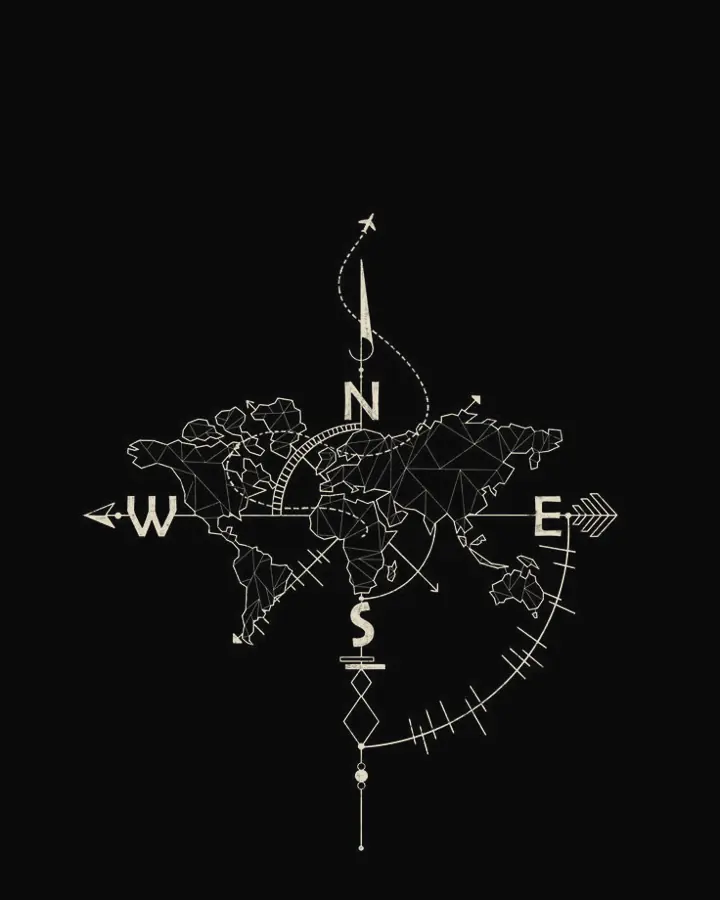

Futures Trading
Exchange-traded futures contracts, approached with a defined plan and defined risk.
Professional Futures & CFD Trader
I trade Futures and CFDs with proprietary trading firms. My work is built around a system — defined risk, disciplined execution and honest review — rather than around any single result.
Connect With Me
Lucius CapitalTrading Profile
How I trade, the markets I work in and the framework behind every decision.
Exchange-traded futures contracts, approached with a defined plan and defined risk.
Contracts for difference across multiple instruments, run through the same system and risk framework.
Trading firm capital under strict risk parameters. Credentials from FTMO, Topstep, The5ers, MyForexFunds and FundedNext are documented in Achievements.
System first. Decisions come from rules set in advance, not from the result of the last trade.
Risk is defined before entry. Drawdown limits are treated as hard constraints, never as suggestions.
Hands-on experience across Futures and CFD markets, validated through evaluations and funded programs. See the timeline.
Achievements & Milestones
The figures below are taken directly from the certificates issued by each firm.
Gold tier · 5 Jun 2024
Officially funded by The5ers
27 Jul 2025
27 Feb 2024
FTMO · Topstep · The5ers · MyForexFunds · FundedNext
Passed the Trading Combine and became a Topstep Funded Trader.
Commemorative certificate issued by Topstep; not a professional accreditation.Passed the MyForexFunds Evaluation and recognised as a MyForexFunds Professional Trader.
Officially recognised by FundedNext as an Elite Trader (Certificate of Appreciation).
Past performance does not guarantee future results.
Individual results; they do not represent the results of everyone.
My Trading Journey
Documented milestones across evaluations, funded programs and payouts.
Awarded the Certificate of Appreciation, recognised by FundedNext as an Elite Trader.
Awarded the Certificate of Achievement, recognised as a MyForexFunds Professional Trader.
FTMO profit split of $3,301.78.
Overall rewards reached $20,460.86 and the Gold tier.
Officially funded by The5ers on the High Stakes 5K program.
Officially funded by The5ers after achieving results within the program’s risk parameters.
Payout of $226.14 received (High Stakes 5K).
Profit share of $4,373.88 paid out.
Passed the Trading Combine and officially became a Topstep Funded Trader.
Trading Philosophy
Focus on the Trading System, Not the Profit or Win Rate.
Rules decide. Results are for review.
Protect capital first.
Execute the plan, not the mood.
Wait for the setup that fits.
Repeat the process, trade after trade.
Judge the system over many trades, not one.
The Lucius Capital Framework
Step 01
Build a foundation in market structure, liquidity, price behaviour and how markets move.
Step 02
Develop a rules-based trading system with clear entry conditions, confirmation and position management.
Step 03
Control risk, define position size, limit drawdown and protect capital.
Step 04
Execute the plan with discipline and patience: no emotional trading and no casually breaking the rules.
Step 05
Keep a journal, review the data, identify mistakes and keep improving the system.
The philosophy behind Lucius Capital
A different perspective on trading, knowledge and collective growth.
Why I never consider other traders my competitors.
Trading is a vast market, with liquidity constantly rotating and opportunity forming under different conditions.
Trading is not a field where sharing know-how means giving up your own competitive edge.
I do not believe that helping another person understand the market better leaves me with fewer opportunities.
Why sharing knowledge does not diminish my own opportunities.
I share knowledge, experience and what I have learned not because I lack opportunities to grow myself.
I do it because I understand the value of having companions, different perspectives and a community that studies the market seriously together.
The right piece of experience at the right time can help someone avoid mistakes that would cost a great deal of time and money.
I believe knowledge does not lose its value when it is shared. On the contrary, it can keep growing through exchange, challenge and verification.
How independent perspectives, research and critical thinking create value.
One person can see one part of the market. Many people studying together can see more of its sides.
When independent views are shared, challenged and verified against data, we can raise the quality of analysis and recognise mistakes that an individual easily overlooks.
I do not believe the crowd is always right. I believe in independent thinking, data and verification.
“I don’t lose opportunities by sharing what I know. I believe we create more value when knowledge is challenged, examined and shared.”
Why personal growth and community contribution matter beyond account performance.
I do not want the knowledge built up over time to stay locked in a personal account.
I want people who take the market as seriously as I do to be able to reach it, learn from it and develop methods of their own.
I do not want to create copies of myself. I want every trader to have enough knowledge to analyse alone, enough discipline to take responsibility, and enough ability not to depend on anyone.
The long-term philosophy behind Lucius Capital.
Lucius Capital is not only a place to share market views.
I want to build a community where knowledge, experience and trading thinking are developed seriously.
No envy, no selfish competition, no promises of getting rich quickly. We study, practise, challenge one another and keep improving ourselves.
If what I share helps one person avoid a mistake, build a better trading system or find the path that suits them, that is already a value worth continuing for.
I don’t want to build a community of people who depend on me. I want to build an environment where everyone can develop independent thinking, improve their abilities and grow through knowledge.
LUCIUS CAPITALPrecision. Discipline. Knowledge.
If you also believe trading is a journey of knowledge, discipline and continuous growth, connect with us. It does not matter where you are on your trading journey. What matters is whether you are ready to learn, share and take your own development seriously.
We may start from different perspectives, but we share one goal: to become better traders every day.
Our ecosystem
Connect with Lucius Capital across our digital platforms to explore market insights, trading education, financial perspectives and our global community.
Connect
Whether you want to talk about trading, process or the community, I’d be glad to connect.